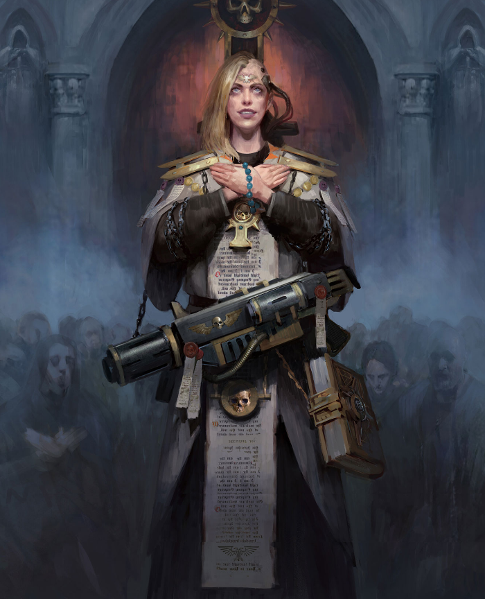

Dossier Ecclésiarchique 802.M41
L’Adeptus Ministorum est la voix religieuse de l’Imperium. Il ne commande pas seulement la foi. Il l’organise, la surveille, la transforme en arme.
Dans chaque monde loyal, dans chaque cité-ruche, dans chaque chapelle perdue au fond d’un vaisseau, son influence rappelle une vérité unique. L’Empereur veille. L’Humanité doit obéir.

FONCTION IMPÉRIALE
Le Ministorum prêche la dévotion absolue envers le Dieu-Empereur. Ses prêtres bénissent les armées, guident les masses, condamnent les faibles et désignent les impurs.
La foi qu’il répand n’est pas douce. Elle est dure, brûlante, intolérante. Elle maintient debout des milliards d’âmes qui, sans elle, sombreraient dans la peur ou l’hérésie.
Ses cathédrales dominent les horizons. Ses processions remplissent les rues. Ses sermons transforment la souffrance quotidienne en devoir sacré.
Mais la foi impériale a un prix. Le doute devient suspect. La différence devient menace. La tiédeur devient faute.
DOGME ET DEVOIR
L’Adeptus Ministorum ne cherche pas seulement à sauver les âmes. Il les discipline. Il les aligne sur une doctrine unique, assez rigide pour survivre à la peur, à la guerre et à la corruption.
Là où son autorité est forte, la population endure davantage. Les soldats marchent plus longtemps. Les mourants prient au lieu de maudire. Les foules acceptent des sacrifices qu’aucune administration ne pourrait imposer seule.
Cette puissance spirituelle rend le Ministorum indispensable. Mais aussi dangereux.
Une foi trop ardente peut devenir fanatisme. Un prêche trop violent peut déclencher une purge. Une accusation trop large peut condamner des innocents par milliers.
HÉRITAGE AU SERVICE DU TRÔNE
Pourtant, dans l’Imperium, l’innocence ne protège pas toujours. La pureté doit être démontrée. La loyauté doit être répétée. La foi doit être visible.
L’Adeptus Ministorum incarne cette réalité. Il offre aux masses une raison de vivre, de souffrir et de mourir.
Et lorsque la foi ne suffit plus, il reste le feu.
Fin de l’extrait. Toute déviation doctrinale doit être signalée aux autorités ecclésiarchiques compétentes.